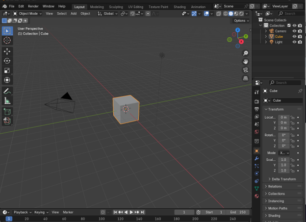

~2 How Do I Begin?~
12/23/2024
Ok, so you have your Blender program installed. Now What?
Just start by opening Blender and looking around.
Tap anywhere on the screen off of the Welcome screen to get to the cube. The cube is your default object and it is always sitting here waiting for you when you begin.

We could start off with the cube, but lets instead add another object. To delete the cube off of the screen just click on it with your mouse, and hit the delete button on your keyboard.
To Add another Object
Go to the top of the viewport and open the Add menu. From there go to mesh and then click on Ico Sphere.
At the bottom of the screen, you will see this little text.
Open up the arrow to display more options for this sphere. Change the subdivisions to 5.
Warning! If you click off of this dialog box at the bottom it will disappear never to return. If you want it back, at this point it is best to just delete your object and re-add it again to the viewport.
Now our sphere looks a bit smoother and not so lumpy, so 5 is good.
You can do other things from this box too. Like set the radius. Right now it is 1 m. Let’s change it to 2. And as you can see the scale of the ball gets bigger.

We can also change the Location and the Rotation, but with a ball, rotation doesn’t really do a whole lot of stuff, and you already know what would happen if we changed the location. So, let’s just leave that right here.
The Property Panel
You will notice that if you click off of that box at the bottom with all the helpful stuff that it will disappear forever, but we can do exactly the same stuff, except for subdivide from the Property panel at the right. Subdivide can be done one you leave Object mode and go into Edit mode, but Edit mode is a topic for another day.
Click on that orange rectangle on the left side of the property panel to open up the Object Property Panel.
Now if you change the Scale of X,Y and Z to 2.000. Then it will do the same thing as radius and make the ball bigger.
The Add Menu
If you explore the Add menu, you will find that you can add all sorts of things.
Well, that will pretty much start you off with Blender, in our next tutorial, we will take a look at moving around in the Viewport.